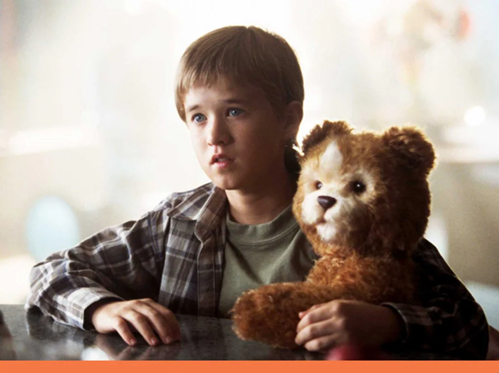

Welcome to my movie review page! Here are some movie reviews for you to explore:
Click the buttons below to access more stuff!
Monster
Hirokazu Koreeda
★★★★★
"Who is the monster?"

A.I.
Steven Spielberg
★★★★☆
An emotional journey through love and loss.
Love Letter
Shunji Iwai
★★★☆☆
A fun family film full of laughs.
Everything Everywhere All at Once
Daniel Scheinert, Daniel Kwan
★★★★★
An inspiring story of hope and resilience.
Princess Mononoke
Hayao Miyazaki
★★★★☆
A gripping mystery that keeps you guessing.
×
Monster
Hirokazu Koreeda
★★★★★
Truly, what an amazing film... I can’t help but add that this is a movie best experienced with as little prior information as possible. That said, since this is a review, I’m about to spoil everything. ğŸ˜
First off, the structure was incredibly unique. The story is divided across the perspectives of three characters, with deliberate withholding of information to provoke misunderstanding in the audience. I read a review where someone referred to this process of misinterpretation as a kind of "monster-hunting"—trying to identify who the true monster is—and I think that’s a fitting description. (I’m borrowing it!)
Initially, I assumed it was a story about family, or perhaps school bullying, with a focus on the unyielding friendship between two boys at its heart. (Based on the trailer and such.) But… oh, oh no. The early lines of dialogue turned out to carry entirely different meanings when revisited in their proper context, and I found myself gasping as the pieces fell into place. ğŸ˜
This movie incorporated so many elements I love (haha). Earlier this year, after watching The A.I. I thought, Wow, this might be my favorite film of the year!—but now Monster is seriously challenging its spot... ğŸ˜ğŸ˜ I especially loved how it captured the shades of gray between black and white, which is something Japanese films often excel at. The way it portrayed how narrow-minded our understanding of the world can be was powerful, both thematically and visually. The child actors gave stellar performances, the sound design and ambient recordings were brilliant, and the subtle inclusion of a queer narrative was another highlight for me.
There were moments where I couldn’t stop myself from quietly shedding tears. Some of these were deeply personal to me (haha), so I’ll spare the details, but I imagine many others were moved to tears during the confession scene, as well as the one with the principal and the horn and trombone duet. Those were absolutely beautiful.
As for the ending… I naturally assumed it depicted death. But then, in an interview, the director decisively stated that both characters survived, which caught me off guard. While he mentioned the scene was intentionally shot to leave it ambiguous—whether it was a fantasy after death or a survival scene—I had just assumed death because:
The boys never reunited with the teacher or the mother.
When they ran out of the bushes, the fence that had blocked their view earlier was suddenly gone.
Their secret hideout—a place they felt safe together—was a train.
This interpretation was heavily influenced by my own background knowledge (haha, sigh). In Japan and Korea, there’s a well-known historical pattern of lesbian couples proving their love through suicide, often binding themselves together on train tracks. With that context, I was clutching my head in despair throughout the ending. However, the director mentioned that he was inspired by Night on the Galactic Railroad, which made sense—it’s such a cultural touchstone in Japan.
Honestly, it was such a great film. But my soul felt so tormented throughout that by the time it ended, I was desperate for a drink and dragged my friend (who watched it with me) to a bar. I’d love to watch it again someday.
×
A.I.
Steven Spielberg
★★★★★
It was such… such an incredible film.
Honestly, after watching The Whale and crying my heart out, I didn’t think another movie could make me cry even harder. But then I saw A.I. and, well… there went my tears again, even more this time. 😂😠If someone asked me later which scenes made me cry, I don’t think simply describing them would convey the impact. The film’s storytelling and buildup, both visually and narratively, just left me utterly defenseless by the end.
The concept of a machine wanting to become human feels like a fairly common trope now (although perhaps it wasn’t as prevalent when this movie was made?). Still, the way it was portrayed here was exceptional. Honestly, if I tried to explain it in words, it might sound like just another story, but experiencing it directly was completely different.
The child actor delivered such an amazing performance. A friend who watched it with me wondered why he seemed so robot-like, and then pointed out that the actor didn’t blink at all during his scenes—how incredible is that?! 😠At first, the uncanny valley effect was really strong (even though he is human, which was so fascinating). But as the movie progressed, his performance felt increasingly human, and I was blown away by his transformation.
The combination of a child’s boundless love for their parents and a machine’s dream of a fairy tale… it all wove together so beautifully. The story of humans who lose touch with their humanity and a machine yearning to become human—it’s not exactly groundbreaking when you write it out, but the way it was told here was so moving and unique.
And then… just when you think it’s about to end, the story suddenly continues. Honestly, I worried it might feel strange or unnecessary, but the way they carried it forward was so masterful. By the time he asked, “Would you like some coffee?” I was just in tears, completely undone.
It’s not the kind of film that feels groundbreaking or revolutionary, but it’s one that lingers in your mind. I feel like I’ll continue to think about it and grow fonder of it over time. It was so, so good—truly.
×
Loveletter
Shunji Iwai
★★★★★
I first encountered this director’s work through All About Lily Chou-Chou, which admittedly intimidated me a bit (haha… 😅). While many people watch Love Letter first and then experience the shock of Lily Chou-Chou, I think I understand why now. Love Letter turned out to be an adorably charming and enjoyable romance film with broad appeal.
The opening of the movie immediately caught my interest! Writing a letter to someone with the same name by mistake, leading to misunderstandings and confusion—that premise was so intriguing. The resemblance between Hiroko and Itsuki also created an element of suspense for the viewer, inviting speculation. To be honest, at first, I couldn’t distinguish between Hiroko and Itsuki at all… only to realize later that they were played by the same actor! Of course, it would have been strange if I had been able to tell them apart…
And then there was Blue Coral Reef. It’s a song I’d heard somewhere before, but to hear it again in this film, tied to such a poignant context—sung at the moment of death—was utterly romantic in a heartbreaking way. I also loved the ambiguity of who the song was meant for. It added another layer of emotional resonance.
Knowing beforehand that this was the “Ogenkidesuka” movie, I braced myself for that iconic scene. When it came, I initially thought, “Ah, here it is,” but barely five seconds later, I found myself in tears. What kind of emotions must one feel to ask a deceased loved one, “Are you doing well? I am doing fine”? The fact that this line is meant as a way to let go of someone makes it even more devastating. It completely wrecked me.
The actress who played the lead did an incredible job. She made Hiroko and Itsuki feel like entirely different people, which added so much depth to the story. And the visuals? They were full of elements I personally love—cameras, libraries, curtains, snow… everything! It’s a film I’d love to revisit someday if I get the chance.
×
Everything Everywhere All at Once
Daniel Scheinert, Daniel Kwan
★★★★★
I watched Everything Everywhere All At Once after a few drinks, so I’ll be honest—most of the actual plot is a bit of a blur. 😂 But the feeling it left me with? That’s something I won’t forget anytime soon.
Even in my slightly hazy state, I could tell this movie was something special. It felt chaotic in the best way, like it was constantly teetering on the edge of absurdity but never losing its heart. It was hilarious, heartbreaking, and downright bizarre, all at once (fitting, right?). Even though I couldn’t catch every detail, I remember being completely in awe of how seamlessly it blended genres, emotions, and timelines.
One thing that stood out, even through the fog of my tipsy brain, was the way it explored family, love, and the meaning of life—but in such a wild, unpredictable way. It was like being thrown into a kaleidoscope of emotions, where every turn revealed something new and unexpected.
And the performances! Even in my less-than-sober state, I could feel how raw and genuine they were. There were moments that made me laugh so hard I almost spilled my drink, and others that hit me right in the chest, making me want to cry (if I wasn’t already too caught up in the whirlwind of it all).
I’m honestly dying to watch it again, this time with a clear mind, so I can fully appreciate all the details I missed. But even as it is, the memory of how this movie made me feel—like I’d just been on an emotional rollercoaster through infinite dimensions—has stuck with me. It’s the kind of film that feels like a gift, something to be revisited and savored over time. I can’t wait to experience it all over again. 🌀💖
×
Princess Mononoke
Hayao Miyazaki
★★★★★
Princess Mononoke is just… such an incredible film. After watching it, the impact stayed with me for so long, and I was completely swept away by its depth, beauty, and emotional weight.
Visually, the movie is stunning—every frame felt like a painting, with nature, the characters, and mythical creatures all intricately designed. The way it intertwined nature, humanity, and those mystical beings was so captivating. It wasn’t just about the environment, but a complex narrative about conflicting perspectives and struggles, which really hit me on a deeper level.
The characters, especially Ashitaka and Princess Mononoke (San), were so compelling. What I loved most is that the movie doesn’t give you a clear "villain" or "hero"—it shows that everyone is fighting for something they believe in. Both sides are just trying to survive, and that made the conflict even more meaningful. It wasn’t a simple good versus evil story; it was so much more layered than that.
And the music! Joe Hisaishi’s score really brought everything together. The music heightened the emotions in every scene, pulling you deeper into the movie’s atmosphere. It was perfect for those moments of tension, sadness, and even hope.
Watching Princess Mononoke was like an emotional rollercoaster. There were moments of heartbreak, moments of awe, and then moments of quiet reflection. It’s the kind of movie that stays with you long after it ends, especially with the way it makes you think about how we treat the world and each other.
I definitely want to watch it again. I’m sure I missed so much the first time around, and I feel like it’s one of those movies that keeps revealing new things with each viewing. If you haven’t seen it yet, you really should—it’s a beautiful and powerful film that’s worth experiencing.